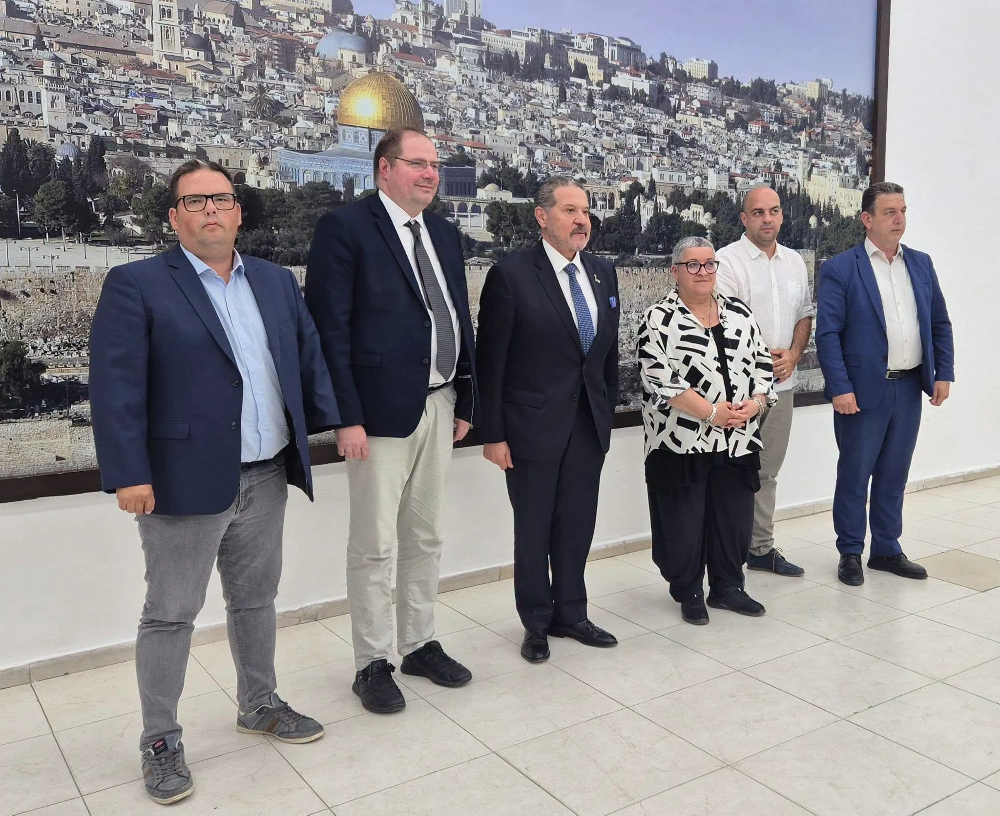
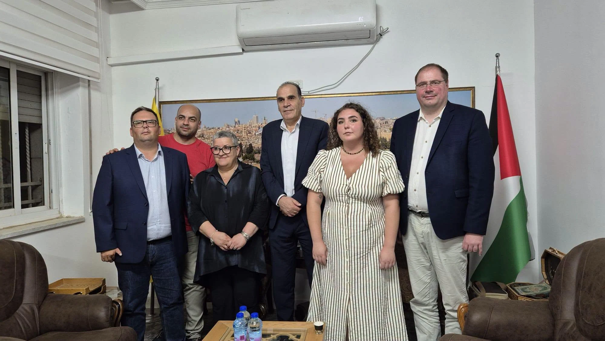
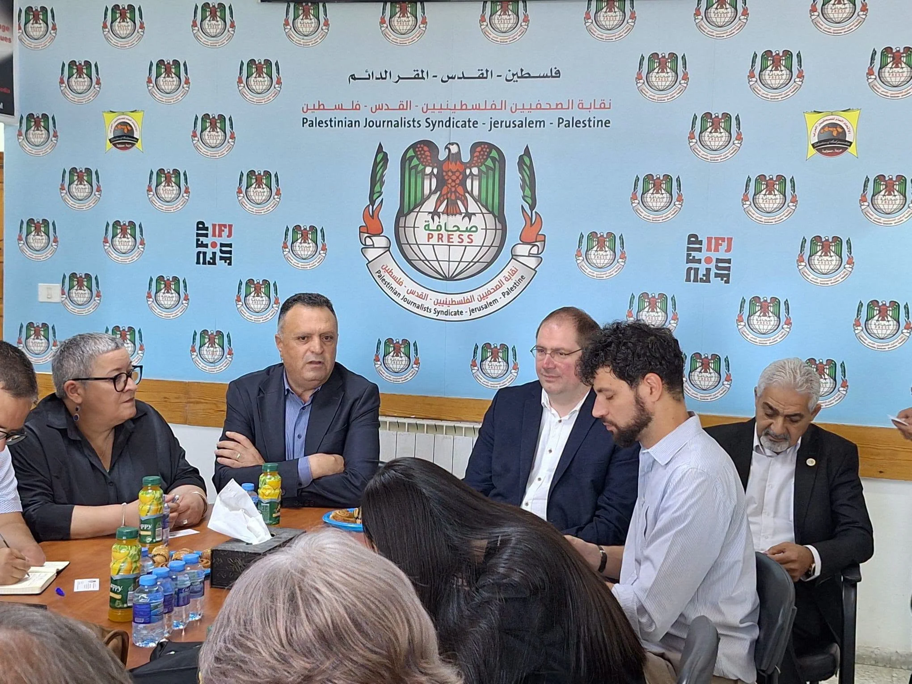
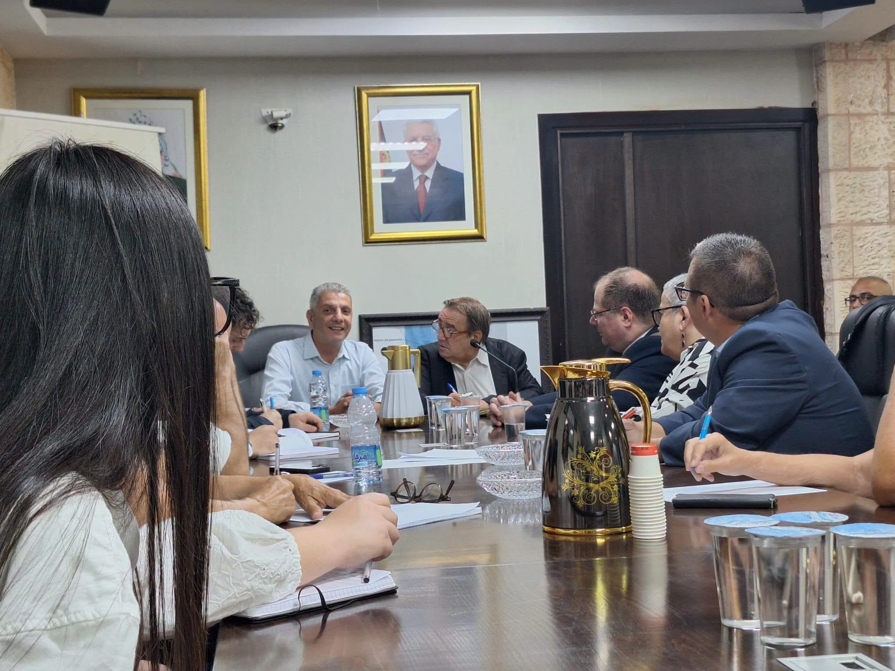
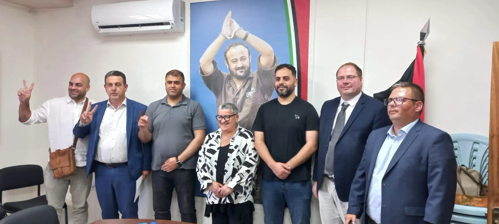
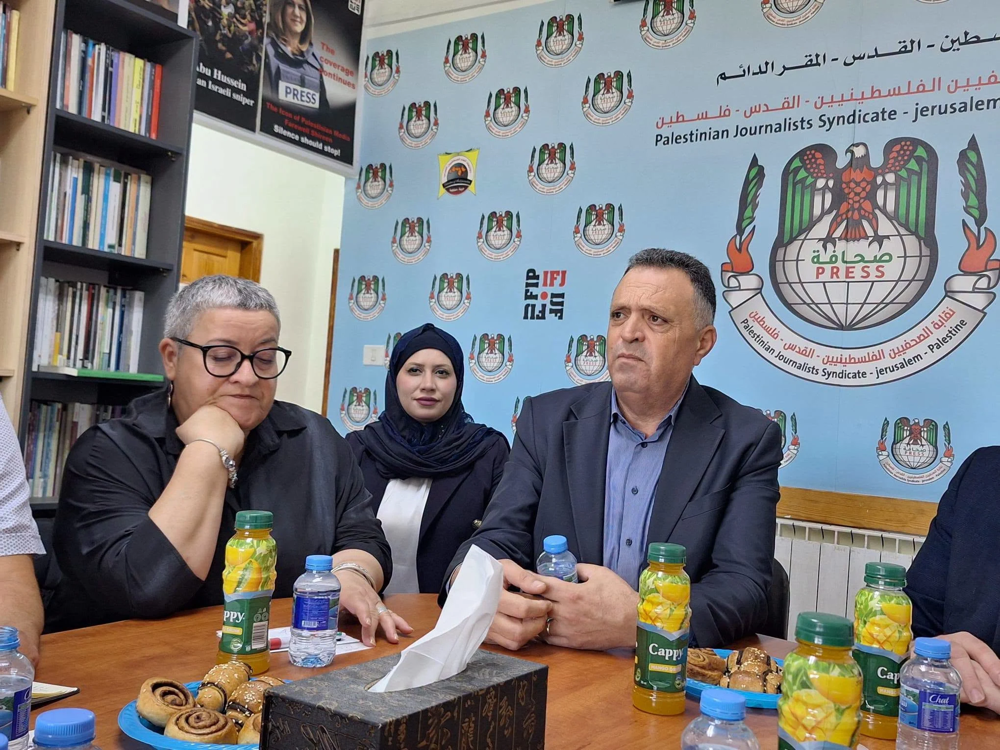

Publication relayée par le PCF 79
Une délégation du PCF en Palestine
Date de mise à jour indiquée par Facebook · 20 juillet 2026
Texte de la publication · PCF national
🇵🇸 Une délégation du PCF composée notamment de Vincent Boulet responsable du secteur international du PCF, Silvana Silvani sénatrice communiste, Ozer Oztorun élu communiste de Villejuif et Sylvain André maire de Cendras et président de l’association des maires ruraux du Gard, s'est rendue en Palestine.
Ayant pour objectif de renforcer l'alliance internationale pour les droits du peuple palestinien, lancée avec l'OLP place du Colonel-Fabien à Paris le 4 juin 2025.
🤝 Au cours de ce déplacement, la délégation a échangé avec le commissaire aux détenus et anciens détenus sur les conditions de détention, dénoncées comme criminelles, imposées aux prisonniers politiques palestiniens dans les prisons israéliennes. Elle a également rencontré le comité pour la libération de Marwan Barghouti, avec lequel un échange à distance a eu lieu avec Fadwa Barghouti.
🕊️ La délégation a aussi rencontré le président du Syndicat des journalistes palestiniens afin de documenter les crimes commis par l'armée israélienne contre les journalistes. Un entretien avec le ministre de la Jeunesse et des Sports a permis d'évoquer des projets concrets de coopération décentralisée entre collectivités.
Enfin, la rencontre avec Yasser Abbas, responsable des relations internationales du Fatah, a mis en avant une exigence claire : après la reconnaissance de l'État de Palestine, la France doit désormais établir de véritables relations d'État à État avec la Palestine.






Sources
PCF national · publication relayée par le PCF 79 · bibliothèque Facebook · AR-0002-FB-00730
À lire aussi · Journée internationale de la paix. Le texte national dans le relevé